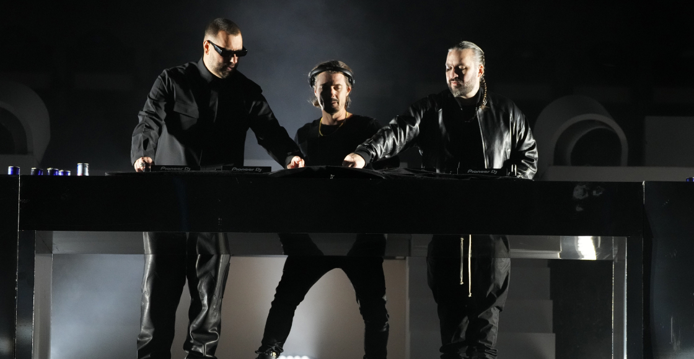
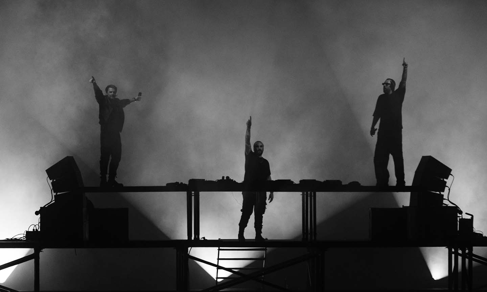
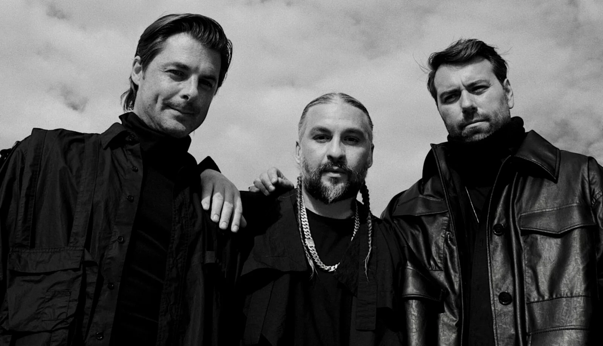

HISTORIA
Antes de Swedish House Mafia, Axwell, Steve Angello y Sebastian Ingrosso actuaban como DJs solistas a fines de la décadgña de 1990 y principios de la década del 2000. Angello e Ingrosso se conocían cuando eran niños que crecieron en Estocolmo, y a menudo colaboraban bajo varios alias en sus primeras carreras. Las colaboraciones con Axwell llegaron más tarde durante la década cuando este conoció en la capital sueca a Sebastian Ingrosso, quien más tarde le presentó a Steve Angello en una reunión casual. Hacia mediados de la década del 2000, Axwell, Angello e Ingrosso se encontraron a menudo tocando shows juntos, con el otro compañero DJ sueco Eric Prydz, uniéndose a ellos para algunos shows.
Fueron oficialmente reconocidos como Swedish House Mafia en marzo de 2007 por la Winter Music Conference. El grupo adoptó oficialmente el nombre a fines de 2008, y Prydz decidió no unirse al grupo, describiéndose a sí mismo como un "fanático del control" en el estudio que no puede soportar durante la colaboración, incluso con amigos cercanos. Prydz anunció que abandonaría el grupo poco después de que el colectivo se formara oficialmente en noviembre de 2008, y éste se trasladaría a Londres.
Los tres contaban con una reputada carrera como disc-jockeys, y comenzaron a colaborar juntos. La primera producción que lanzó el grupo fue «Get Dumb», producida con Laidback Luke y lanzada en 2007. En 2009, Swedish House Mafia se asoció con Laidback Luke nuevamente para producir la canción «Leave The World Behind», que contó con la voz de Deborah Cox. Ninguna de estas canciones fue lanzada bajo el nombre de Swedish House Mafia debido a que no fue hasta comienzos de 2010 cuando pensaron seriamente en formar el grupo. Aun así, «Leave The World Behind», aparecerió en el primer álbum recopilatorio del grupo, Until One.
Los tres contaban con una reputada carrera como disc-jockeys, y comenzaron a colaborar juntos. La primera producción que lanzó el grupo fue «Get Dumb», producida con Laidback Luke y lanzada en 2007. En 2009, Swedish House Mafia se asoció con Laidback Luke nuevamente para producir la canción «Leave The World Behind», que contó con la voz de Deborah Cox. Ninguna de estas canciones fue lanzada bajo el nombre de Swedish House Mafia debido a que no fue hasta comienzos de 2010 cuando pensaron seriamente en formar el grupo. Aun así, «Leave The World Behind», aparecerió en el primer álbum recopilatorio del grupo, Until One.
En 2010, Swedish House Mafia firmó un contrato discográfico con polydor records de Universal Music Group (anteriormente Polygram). Lanzaron «one», su primer sencillo oficial bajo el nombre de Swedish House Mafia, en Beatport el 2 de mayo de 2010, donde logró el éxito internacional, ubicándose en el número 7 en la lista de singles del Reino Unido.9 El grupo siguió esto con una versión vocal igualmente bien recibida en colaboración con Pharrell Williams, retitulada como «One (Your Name)».
Su próximo sencillo, «Miami 2 Ibiza», con Tinie Tempah, fue lanzado el 1 de octubre de 2010.12 Se ubicó en el número 4 en la lista del Reino Unido y apareció en el álbum de estudio debut de Tempah, Disc-Overy. Ambas pistas fueron tomadas del álbum de compilación debut del grupo Until One; una colección de producciones y remixes de Swedish House Mafia como grupo y como solistas, junto con otros artistas también. Ha logrado un premio BPI Gold Sales en el Reino Unido y un premio GLF Platinum Sales en Suecia.
Su éxito de ventas llamó la atención de la discográfica EMI, que firmó un acuerdo con el grupo para grabar un disco, que sería distribuido por Universal Music para Europa y América. Su primer trabajo, Until One, salió a la venta el 25 de octubre de 2010, y está formado por temas propios y Mashups. Ese mismo año, fueron galardonados con un premio MTV Europe Music al mejor artista sueco. El Supergrupo alcanzó en 2011 la décima posición en la encuesta anual realizada por la revista DJ Mag. En la encuesta del 2012 descendieron dos ubicaciones alojándose en el duodécimo puesto.
A finales de septiembre de 2012, la banda anunció las fechas de su última gira One Last Tour, que comenzó el 16 de noviembre en Dubái y finalizó el 9 de marzo de 2013, en el Parque Histórico de Los Ángeles, Estados Unidos. Sus dos últimas actuaciones tuvieron lugar en el Ultra Music Festival de miami, el 16 y 24 de marzo de 2013. Junto con las fechas de esta gira, salió a la venta su segundo álbum compilatorio Until Now en el que recopila los grandes éxitos de la banda, y de sus tres miembros por separado.
En abril de 2013, Axwell y Sebastian Ingrosso se juntaron de nuevo para crear el proyecto musical DEPARTURES, una fiesta que se celebra en el Ushuaïa Ibiza Beach Hotel, y por la que cada verano pasan grandes artistas como Alesso, Dirty South, Thomas Gold o Calvin harris, además de otros muchos más. Axwell y Sebastian Ingrosso comenzaron a actuar conjuntamente, bajo el nombre artístico de Axwell Λ Ingrosso, frente a Steve Angello que desarrolló su carrera en solitario.
Después de la finalización del One Last Tour, se confirmó que el grupo haría un segundo documental llamado Leave The World Behind, que fue lanzado en teatros selectos durante la primavera de 2014. Se estrenó oficialmente en el festival de música y cine South by Southwest (SXSW) el 27 de marzo. Leave The World Behind se puso a disposición para alquiler y compra en ITunes y se lanzó en Blu-ray y dvd el 2 de septiembre de 2014.
El 25 de marzo de 2018, se confirmó la asistencia de Swedish House Mafia en el Ultra Music Festival 2018 en Miami a través de la edición alemana de la DJ Mag, tan solo 24 horas antes de su actuación además de una campaña de promoción extrema por toda la localidad de Miami con una fecha y el logo del grupo. Habían pasado cinco años desde que el grupo actuó por última vez durante el cierre del Ultra Music Festival 2013.
Tras la actuación de David Guetta, el grupo inició su actuación con «Miami 2 Ibiza». Sonaron tanto canciones de Swedish House Mafia como de sus miembros en solitario. El programa incluyó sus dos mayores éxitos, «Save The World», «Don't You Worry Child» y «one». Billboard describió la actuación como una de las experiencias musicales históricas de Miami.
Swedish House Mafia confirmó que su espectáculo en Estocolmo se produciría el 4 de mayo de 2019 en el Tele2 Arena. Ante la espectación, el grupo amplió dos fechas más y finalmente actuaron el 2, 3 y 4 de mayo consiguiendo tres sold outs. Para noviembre del 2018, la agrupación soltó un par de imágenes de un posible show en tierras mexicanas. Aquellas imágenes pasaron de ser un rumor a ser una realidad, ya que el pasado 18 de mayo de 2019 se vivió el reencuentro de Swedish House Mafia en suelo mexicano reuniendo cerca de treinta mil personas de distintos países las cuales coreaban sus mayores éxitos musicales. El trío sueco dio de que hablar tras iluminar el Foro Sol con shows de láseres y pirotecnia.
Después de su tour de regreso y con muchas incógnitas de cuándo sacarían nueva música, finalmente tras un tiempo sin ninguna noticia por parte del trío, en 2021 anunciaron su regreso definitivo, su nuevo álbum y los primeros sencillos: «It Gets Better» y «Lifetime» con Ty Dolla $ign y 070 Shake, sus videoclips y una presentación en The Tonight Show Starring Jimmy Fallon.
En la gala del año 2021 de los premios MTV Video Music Awards luego de una presentación junto a sus dos anteriores sencillos, anunciaban también su colaboración con el cantante the weeknd llamada «Moth to a Flame». El 22 de octubre de 2021 junto al lanzamiento de su canción con The Weeknd, anuncian su tour alrededor del mundo para 2022.
En el inicio del año 2022, el trío sacó su esperada versión orquestal de «one», «One Symphony», junto a la Norrköping Symphony Orchestra y al compositor Jacob Mühlrad, tocada el 22 de octubre de 2022 en el show de Apple Music de the weeknd, Memento Mori y presentada originalmente en su tour de 2019.
En marzo de 2022, sacan junto al miembro de The Police, Sting, una versión de la canción «Roxanne», titulada «Redlight» junto a su videoclip oficial.
Finalmente, luego de que se anunciara el retraso del lanzamiento del álbum, que fue previsto anteriormente para finales de 2021 y una publicidad en el Ultra Music Festival 2022 junto a su próxima presentación en el festival para 2023, el álbum finalmente fue lanzado el 15 de abril de 2022, bajo el título de Paradise Again. El álbum incluye diecisiete canciones en las que destacan varias colaboraciones como «Heaven Takes You Home» con Connie Constance, «Don't Go Mad» con Seinabo Sey, y su esperada colaboración en «Frankenstein» con el rapero estadounidense A$AP Rocky. Junto al lanzamiento de su álbum, el día 17 y 24 de abril de 2021 actuaron con the weeknd en el Festival de Música y Artes de Coachella Valley presentado algunas canciones de su nuevo álbum, tocando y mezclando algunos clásicos como «Greyhound» y «one», y canciones revisionadas como «Leave The World Behind» y «Miami 2 Ibiza».
En 2022, el grupo también recibió crédito por coescribir y coproducir. "Sacrifice" y "How Do I Make You Love Me?" del quinto álbum de estudio de The Weeknd. Dawn FM, en el que 'Moth to a Flame' apareció en el Alternative World edicion del álbum.
-Informacion via wikipedia-
.jpg)